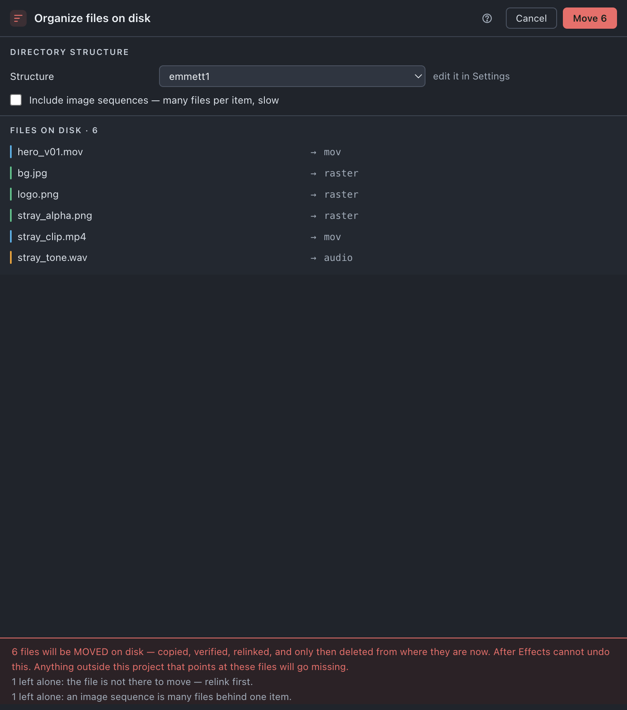

Sort disk
Moves the project's own files into the directory structure you chose, and keeps them there.
Use it when
- The footage is all inside the project directory, but it landed wherever it landed — some beside the
.aep, some in a directory somebody dragged in whole. - You have just brought strays in with Gather and want them filed by kind rather than left where they arrived.
- You have inherited a job whose layout on disk is not the one you work in.
- Every other job on your machine has the same structure and this one has drifted.
What it does
Reads the Disk half of your template — the same template Organize reads for the Project panel — and moves each file already inside the project directory into the directory its media class names. One file at a time: copied, verified, the item relinked, verified again, and only then deleted from where it was, so the spare space it needs at any moment is the size of the largest file, not of the project. Everything it leaves alone is listed with a reason.
What it does not do: it does not bring files in from outside the project directory (Gather does), it never copies — a second copy of a file already in the project is just a duplicate — it does not move anything in the Project panel (Organize does), and it does nothing at all while the directory is Unmanaged.
Do it
- Save the project. An unsaved one is refused with Save the project first — where its files belong is measured from where it lives.
- Choose Directory structure — which template's disk half this run applies. This only chooses; Settings still owns editing the rows.
- Read the left alone lines. Each names a reason, and most name the tool that fixes it.
- Read the move list — every file and where it goes.
- Press Move n. A confirmation card follows with the file count, the total size, and each destination with its own count and size. Press Move n files there, or Back.
Scope. Whole project. Sort disk has no selection mode — it files what is inside the project directory, and "inside" is all of it.

What you'll see
| Option | What it means |
|---|---|
| Directory structure | Which template's disk half this run applies. Organize and Sort disk share one template and each picks its own half. |
| Include image sequences — many files per item, slow | Off by default. A sequence is one item and hundreds of files; with this on the whole run travels or none of it does. |
Notes it may raise, and what they mean:
- n left alone: already in the right place.
- n left alone: the file is not there to move — relink first. — Relink.
- n left alone: outside the project — use Bring stray files into the project. — that is Gather's full name.
- n left alone: shared with every project on this machine. —
/Applications,/Libraryand the rest; moving those breaks every project that reads them. - n left alone: an image sequence is many files behind one item. — turn the option on.
- n left alone: the disk structure has no rule for this kind of file. — a blank row in the Disk half of the structure means "leave alone".
- n left alone: in a directory the disk structure never files into (aep / out / render).
- n file(s) keep their folder name so same-named files do not overwrite each other. — and if even the parent names match, n file(s) share a name AND a folder name and were left alone — moving them would overwrite one with the other.
Undo
Not undoable. Files are moved and the originals deleted, outside After Effects' undo group. The confirmation card is the only gate — which is why it states the size and the destinations first.
Watch out
Things you might not think to do
- Keep a shot or scene directory name while still filing by type. Settings › Disk › A file arriving from a sub-directory › keep the last directory:
plates/sh010/bg.exrlands asraster/sh010/bg.exr. - Route proxies, or one extension, somewhere of their own. A rule of your own — name contains
_proxy→proxies— is matched before the class rules. - Protect an outputs directory from ever being filed into or emptied. Settings › Structure › Disk › Special folders › Leave alone, which already holds
aep,outandrender.
Pairs with
Relink first — a missing file has nothing to move. Gather second, to bring outside files in. Sort disk last. Organize is the same template's other half, and independent of this.